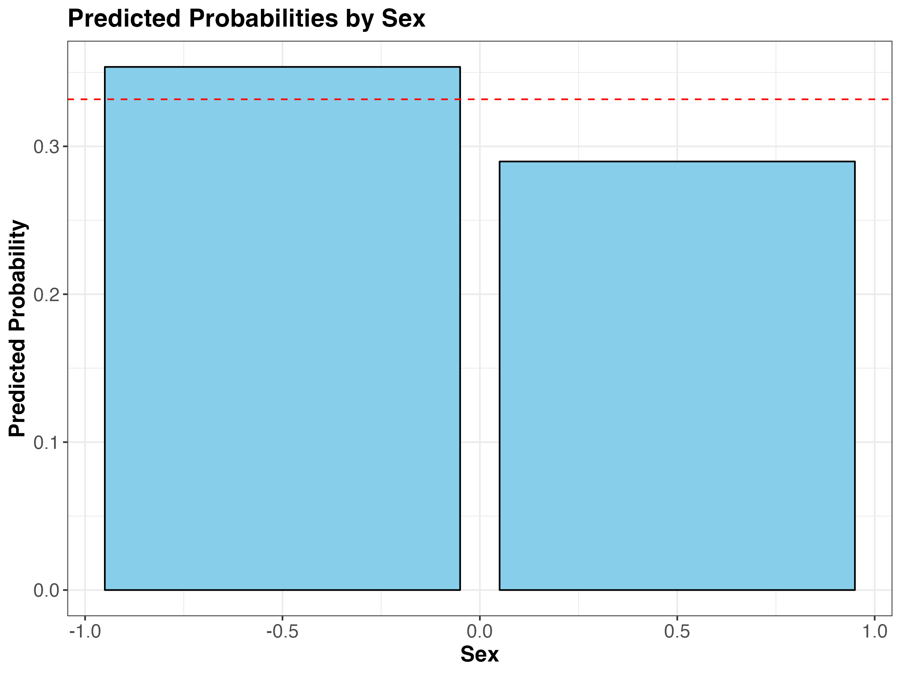

| Variable | Class | Description |
|---|---|---|
| id | double | Athlete ID |
| name | character | Athlete Name |
| sex | character | Athlete Sex |
| age | double | Athlete Age |
| height | double | Athlete Height in cm |
| weight | double | Athlete weight in kg |
| team | character | Country/Team competing for |
| noc | character | noc region |
| games | character | Olympic games name |
| year | double | Year of olympics |
| season | character | Season either winter or summer |
| city | character | City of Olympic host |
| sport | character | Sport |
| event | character | Specific event |
| medal | character | Medal (Gold, Silver, Bronze or NA) |
How do personal characteristics influence an athlete’s odds of winning gold?
A Secondary Analysis of the Olympic Games
Introduction
The Olympic Games, a prestigious international sporting event, epitomize the pinnacle of athleticism. Athletes who qualify to compete at the Olympics represent the elite, possessing physical capabilities that are nothing short of exceptional. However, the intensity of competing at such a high level can exert a significant toll on their bodies, challenging their physical limits through rigorous competitions and demanding training schedules. Fortunately, recent advancements in sports medicine have played a crucial role in supporting these athletes.
Innovations in rehabilitation techniques, injury prevention, and nutritional strategies are enabling athletes to extend their careers, competing effectively at more advanced ages relative to some of their peers. This progress not only enhances their performance but also improves their recovery and overall health, allowing them to maintain peak physical condition for longer than ever before. But how does an athlete’s age relate to their performance? Are older Olympic athletes more experienced and disciplined, giving them a competitive edge that results in greater odds of winning a gold medal rather than silver or bronze? How might the link between age and winning gold medals compare to that of other personal characteristics, such as gender identity among athletes competing in mixed-gender teams?
Method
Research Transparency
We value open science and adhered to high standards of research integrity in this study, maximizing research transparency and replicability through several means.
First, we preregistered our research aims, hypotheses, data manipulations, analytic plans, and the exact analytic code proposed for hypothesis testing on the Open Science Framework (OSF). Preregistrations for Aims 1 (Laboe 2024) and 2 (Ward 2024) are time-stamped and publicly accessible.
We also provide R scripts for scoring and hypothesis testing on this project’s publicly-accessible GitHub repository; these analysis scripts can be run in their entirety with the Olympics data. Finally, we provide detailed descriptions of our data, methodologies, and data analysis procedures in the following sections.
Data Description
To explore these research questions, we conducted a secondary analysis using a longitudinal, historical dataset on the modern Olympic Games. These data include all the Games, from Athens 1896 to Rio 2016, but the Winter and Summer Games were held in the same year up until 1992. As the Games were staggered on a four year cycle starting with 1994, we used a subset of the Olympics dataset with years 1994 and onwards. The Olympics dataset included the raw variables outlined in Table 1.
As this is a secondary analysis of the longitudinal, #tidytuesday ‘Olympics’ dataset, we cannot take credit for collecting or sharing these data with the public. The Olympic data is the result of labor performed by a group of Olympic history enthusiasts. For more information, please refer to their blog (“OlympStats” 2024). For details on where and how the Olympic dataset can be accessed, please refer to GitHub (tidytuesday 2024) and Kaggle.com (Griffin 2018).
Variable Scoring
We manipulated a few of these variables for use in analyses designed to address our research questions. Please refer to Table 2 for a summary of the changes outlined in more detail below.
Gold Medal
To create the outcome variable for hypothesis testing, the raw “medal” character variable was recoded as a dichotomous “gold” factor variable with levels for “gold” (1), and “silver or bronze” = (0). Observations for athletes competing during a given year who did not win a medal were treated as not applicable (NA).
| Raw Variables | Original Class | Change | New Variables | New Class |
|---|---|---|---|---|
| medal | character | dichotomized | gold | factor |
| event | character | extracted gender from events | event_gender | character |
| id | double | converted to factor | id | factor |
| sex | character | contrast coded | sex_c | double |
Event Gender
The raw “event” variable in the Olympics dataset represented multiple variables in one, including the type of sport, whether the event was for individuals or teams, and whether the event was for Men, Women, or Mixed-gender teams.
Good enough practices in scientific computing recommend making each column a variable when working to create analysis-friendly data (Wilson et al. 2017). As such, we extracted gender from the “event” column and coded a new “event_gender” character variable with categorical levels outlined in Table 3.
| Levels | n | Percent |
|---|---|---|
| Men's | 182260 | 67 |
| Mixed | 16940 | 6 |
| Women's | 71916 | 27 |
Athlete Gender
To create the athlete gender predictor variable for testing Hypothesis 1, the raw “sex” character variable was contrast-coded over zero. Contrast coding is an alternative to dummy coding for representing variables with two categories; it is particularly useful for hypothesis testing as the values are symmetrical around zero (i.e., -0.5 and 0.5), easing interpretations of regression coefficients (Brauer and Curtin 2018).
In this case, the coefficient provides the average difference between the two categories, and the intercept reflects the grand mean (i.e., the mean across both categories). This new, dichotomous variable with levels for “M” (-0.5) and “F” (0.5) should facilitate the modeling and interpretation gender-related effects.
Specific Aims
Aim 1
To analyze the influence of biological sex on the likelihood of winning a gold medal among athletes who competed as members of mixed-gender teams in the Olympic Games from 1994 onwards.
Aim 2
To analyze the influence of age on the likelihood of winning a gold medal for Olympic athletes from 1994 onward, controlling for the non-independence of multiple observations per athlete by employing a mixed-effects logistic regression model.
Hypotheses
Hypothesis 1
H1: Males will be more likely to receive a gold medal during the Olympic Games than their female teammates.
Hypothesis 2
H2: After controlling for the non-independence of multiple observations per athlete, the likelihood of winning a gold medal from 1994 onward is significantly, positively associated with the age of the athlete, such that every one-unit increase in age increases the odds of winning gold (versus silver or bronze).
Results
Aim 1
| Effect | Term | Estimate | SE | Statistic | p | Group |
|---|---|---|---|---|---|---|
| fixed | (Intercept) | -0.779 | 0.124 | -6.265 | 0 | - |
| fixed | sex_c | -0.326 | 0.212 | -1.539 | 0.124 | - |
| ran_pars | sd__(Intercept) | 0.477 | - | - | - | id |

Aim 2
Hypothesis 2 was not supported. See Table 5 for more information.
| Effect | Group | Term | Estimate | SE | Statistic | p |
|---|---|---|---|---|---|---|
| fixed | - | (Intercept) | -0.873 | 0.026 | -33.126 | 0 |
| fixed | - | age_scaled | 0.002 | 0.021 | 0.083 | 0.934 |
| ran_pars | id | sd__(Intercept) | 0.804 | - | - | - |
| ran_pars | id | sd__(Intercept) | 0.804 | - | - | - |

Discussion
References
Brauer, Markus, and John J. Curtin. 2018. “Linear Mixed-Effects Models and the Analysis of Nonindependent Data: A Unified Framework to Analyze Categorical and Continuous Independent Variables That Vary Within-Subjects and/or Within-Items.” Psychological Methods 23 (3): 389–411. https://doi.org/10.1037/met0000159.
Griffin, R. 2018. “120 Years of Olympic History: Athletes and Results.” https://www.kaggle.com/datasets/heesoo37/120-years-of-olympic-history-athletes-and-results.
Laboe, Agatha. 2024. “PHS 650 Pre-Reg Assignment: Olympic Dataset,” April. https://doi.org/10.17605/OSF.IO/E8QYF.
“OlympStats.” 2024. OlympStats. https://olympstats.com/.
tidytuesday, rfordatascience. 2024. “The Olympics.” https://github.com/rfordatascience/tidytuesday/tree/master/data/2021/2021-07-27.
Ward, Stephanie B. 2024. “Olympics - Class Example.” Open Science Framework, April. https://doi.org/10.17605/OSF.IO/KV6WP.
Wilson, Greg, Jennifer Bryan, Karen Cranston, Justin Kitzes, Lex Nederbragt, and Tracy K. Teal. 2017. “Good Enough Practices in Scientific Computing.” PLOS Computational Biology 13 (6): e1005510. https://doi.org/10.1371/journal.pcbi.1005510.